Tamyr: инструкция для учителя
Пошаговое руководство: как зарегистрироваться, создать класс, подключить учеников, читать панель учителя и записывать результаты пробного ЕНТ. Все картинки — снимки настоящего приложения. Красная рамка с цифрой показывает, куда нажимать, а цифра — порядок действий.
Коротко о Tamyr. Обычный тест говорит: «62 %, тема — квадратные уравнения». Tamyr ищет, почему ученик ошибается, и спускается к более ранним темам. Например, причина ошибок в квадратных уравнениях может быть в действиях с дробями из 6 класса. Такую причину Tamyr называет корневым пробелом (тамыр по-казахски — «корень»). Учитель видит корни всего класса на одной странице.
Содержание
- Что нужно перед началом
- Регистрация учителя
- Создать класс
- Подключить учеников к классу
- Ученики проходят диагностику
- Как читать панель учителя
- Записать результаты пробного ЕНТ
- Выгрузить данные в Excel
- Если у ученика нет аккаунта: добавить по коду
- Управление классом
- Пример: одна неделя с Tamyr
- Частые вопросы и проблемы
- Честно: чего Tamyr пока не умеет
- Шпаргалка на одну страницу
1. Что нужно перед началом
| Что | Зачем |
|---|---|
| Компьютер или ноутбук для учителя | Панель учителя с тепловой картой удобнее смотреть на большом экране. С телефона она тоже открывается. |
| Адрес сайта: https://sas1k00.github.io/TamyrEdu/ | Устанавливать ничего не нужно, Tamyr открывается в браузере. На телефоне его можно добавить на главный экран, как приложение. |
| Электронная почта учителя | Для входа в аккаунт. |
| Телефоны учеников (или компьютерный класс) с интернетом | Ученики проходят диагностику со своих устройств. |
| Согласие родителей для учеников младше 18 лет | При регистрации ученик ставит галочку: «Мне есть 18 лет, или мой родитель согласен…». Решите заранее вместе с администрацией школы, как вы собираете эти согласия. |
Язык. Кнопка «Қазақша» / «Русский» в правом верхнем углу переключает весь сайт, включая задачи и уроки. Каждый ученик выбирает язык сам.
2. Регистрация учителя
Шаг 2.1. Создайте аккаунт
Откройте сайт и нажмите кнопку «Войти» в правом верхнем углу (1).
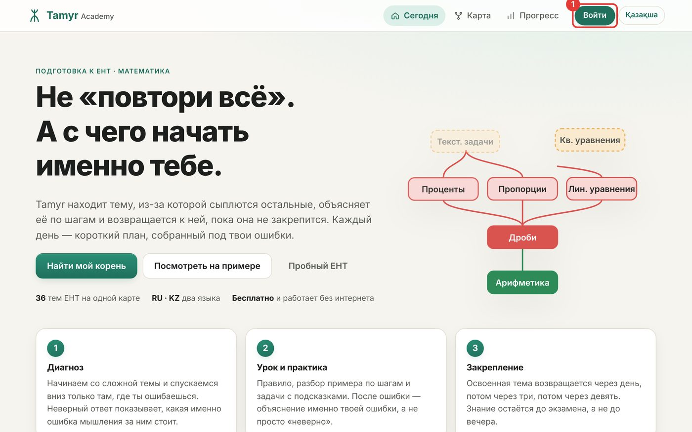
На экране входа нажмите «Нет аккаунта? Создать», затем заполните форму:
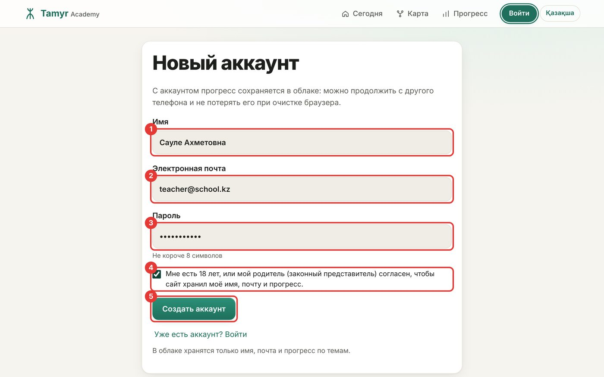
- Имя — так вас увидят ученики, например «Сауле Ахметовна».
- Электронная почта.
- Пароль — не короче 8 символов.
- Галочка согласия.
- «Создать аккаунт».
Если придёт письмо со ссылкой, откройте его и перейдите по ссылке, чтобы подтвердить почту. Письмо может попасть в «Спам».
Шаг 2.2. Получите роль учителя
Сразу после регистрации ваш аккаунт — обычный, ученический. Вкладку «Учителю» ученики не видят, и назначить себя учителем самостоятельно нельзя. Так ученик не сможет открыть чужие данные.
👉 Отправьте администратору Tamyr (команде проекта) почту, с которой вы зарегистрировались. Он включит роль учителя. После этого обновите страницу, и наверху появится вкладка «Учителю». Теперь после каждого входа вы будете попадать сразу в панель учителя.
Пример. «Здравствуйте! Я учитель математики 11 «А», школа № 25. Прошу включить роль учителя для saule.teacher@mail.kz».
3. Создать класс
Откройте вкладку «Учителю». Пока своего класса нет, в панели показан демо-класс из 24 виртуальных учеников. Это симуляция: на ней можно посмотреть, как выглядит панель.
В блоке «Мои классы» впишите название класса, например 11 «А», и нажмите «Создать класс» (1).
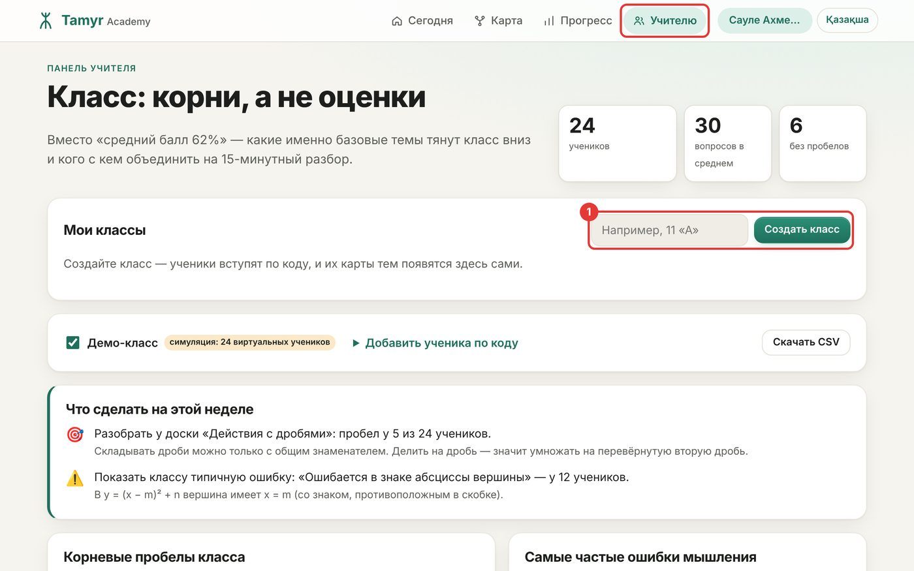
Tamyr сразу выдаст код класса из 6 знаков (1) и ссылку для приглашения (2):
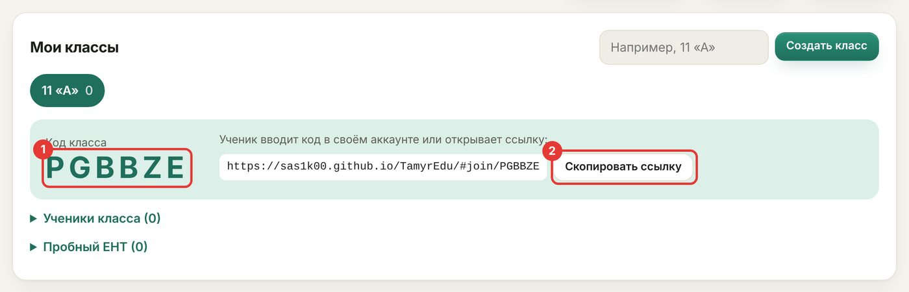
- Код удобно написать на доске, например
PGBBZE. В кодах нет похожих символов вроде 0/O и 1/I/L, поэтому ученики их не перепутают. - Ссылку удобно отправить в WhatsApp или Telegram-чат класса: нажмите «Скопировать ссылку» и вставьте её в чат.
Если у вас несколько классов, создайте каждый отдельно. Сверху появятся вкладки классов, например 11 «А» 6 (число — сколько учеников вступило). Нажмите на вкладку, чтобы переключиться.
4. Подключить учеников к классу
Ученику нужен свой аккаунт — без него учитель не увидит его прогресс. Это займёт у ученика около 2 минут.
Что сказать классу (можно прочитать вслух):
«Откройте ссылку из чата (или сайт sas1k00.github.io/TamyrEdu). Нажмите „Войти“ → „Нет аккаунта? Создать“. Впишите своё настоящее имя и фамилию, чтобы я вас узнал(а). Потом в разделе „Мой класс“ введите код с доски и нажмите „Вступить“.»
Как это выглядит у ученика на телефоне:
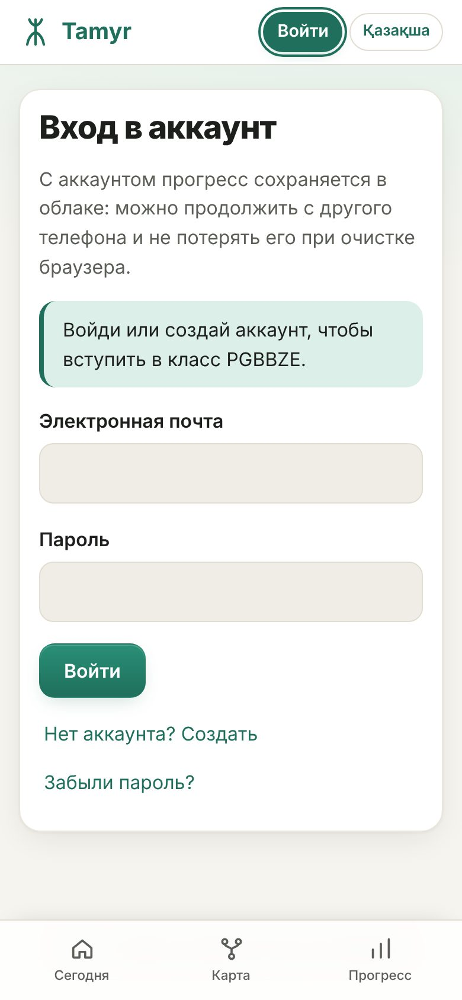
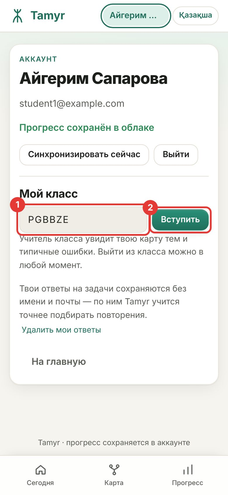
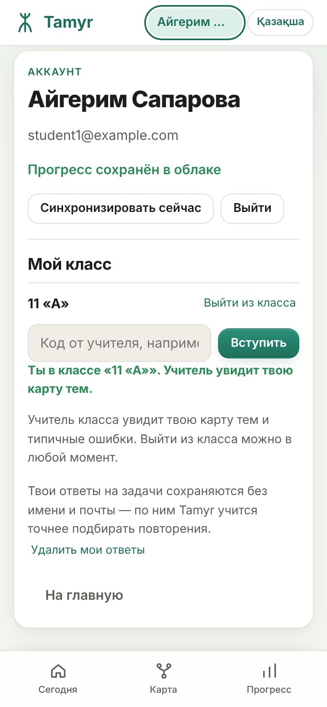
- Слева. Ученик открыл ссылку класса. Tamyr просит войти или создать аккаунт и сам запоминает код класса.
- В центре. После регистрации код уже вписан в поле (1), осталось нажать «Вступить» (2). Если ученик пришёл не по ссылке, он вводит код сам: значок с именем вверху → «Мой класс».
- Справа. Готово: «Ты в классе «11 «А»». Учитель увидит твою карту тем».
Ученику прямо написано, что учитель видит его карту тем и типичные ошибки и что выйти из класса можно в любой момент.
Проверка у учителя. В панели раскройте «Ученики класса». Там список всех, кто вступил. Пометка «ещё нет прогресса» означает, что ученик вступил, но ещё не начал диагностику.
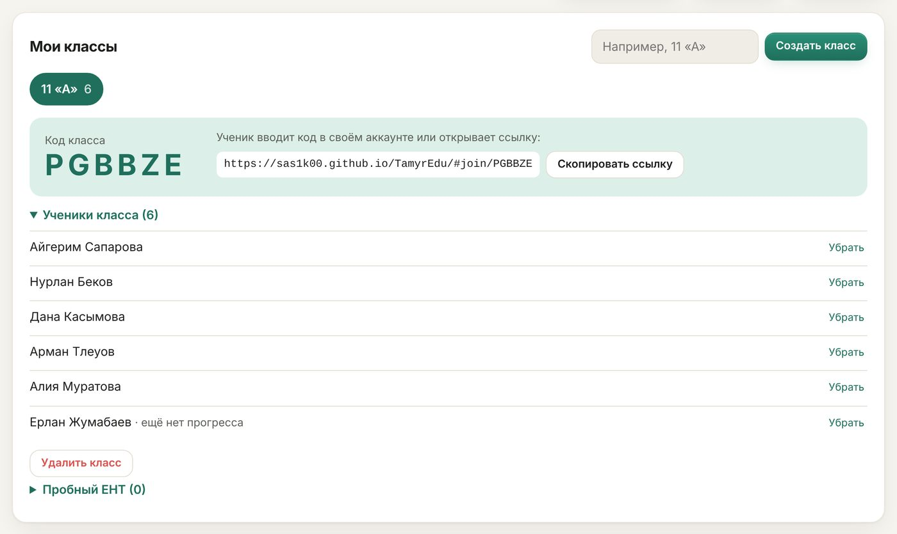
Новые ученики появляются в панели не мгновенно: панель обновляется при открытии, но не чаще раза в минуту. Если кого-то не видно, обновите страницу (F5).
5. Ученики проходят диагностику
Диагностика — это короткий адаптивный тест. Он начинается со сложной темы. Если ученик ошибается, тест спускается к темам, на которых она держится, и ищет корень. Если ученик уверенно решает сложную тему, всё, что под ней, засчитывается без вопросов.
Сколько времени. Ученику без пробелов хватает около 10 вопросов, ученику с пробелами — до 30–40. На практике закладывайте 15–25 минут урока.
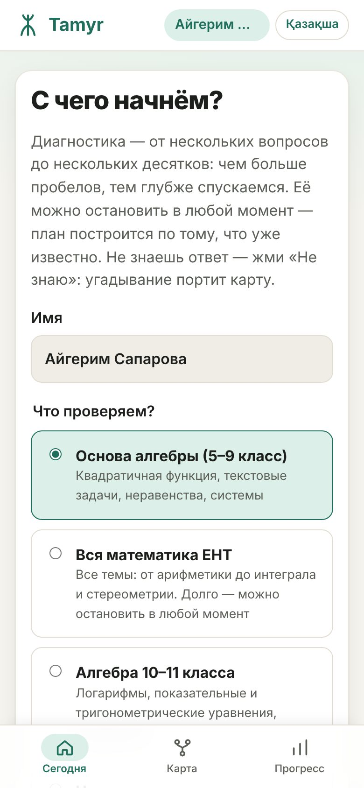
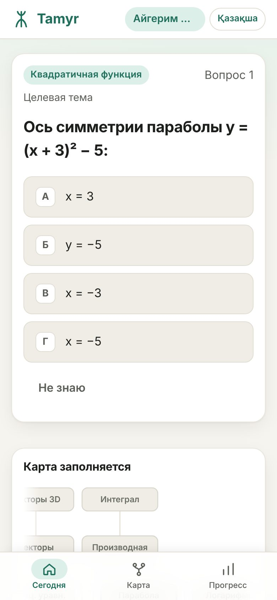
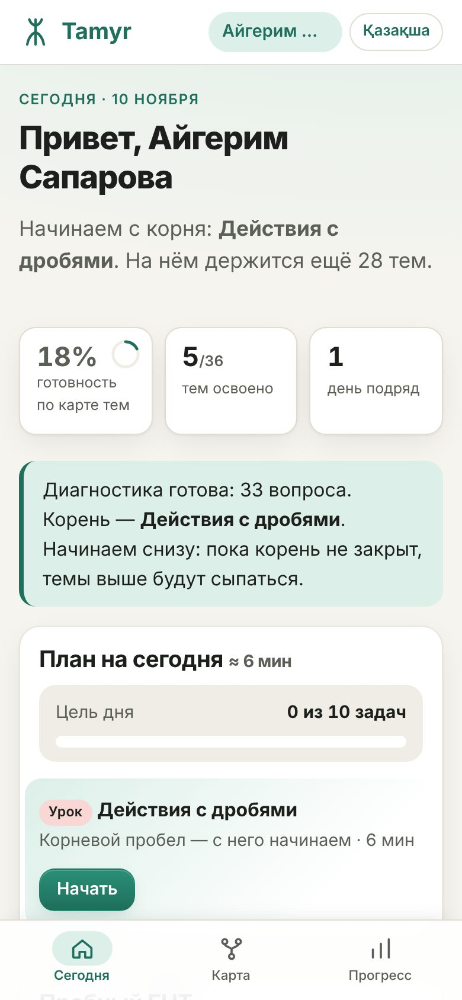
- «С чего начнём?» Ученик выбирает, что проверять (обычно оставляем «Основа алгебры (5–9 класс)»), и нажимает «Начать» внизу.
- Вопрос. 4 варианта ответа и кнопка «Не знаю».
- Результат. «Начинаем с корня: Действия с дробями». Дальше у ученика каждый день свой план: урок по корню, практика, повторения.
Три важных правила для учеников (скажите их до начала):
- Не угадывать. Не знаешь — жми «Не знаю». Угаданный ответ портит карту: Tamyr решит, что тема освоена, и пропустит настоящий пробел.
- Не помогать друг другу и не списывать. Иначе учитель получит неправильную картину класса.
- Диагностику можно прервать: после 6 вопросов появляется кнопка «Хватит, показать план», а незаконченная диагностика сохраняется до следующего раза. Лучше всё же пройти её до конца.
6. Как читать панель учителя
После диагностики данные учеников сами появляются во вкладке «Учителю». Разберём панель сверху вниз на примере класса 11 «А» из 6 учеников: пятеро прошли диагностику, один ещё нет.
6.1. Сводка
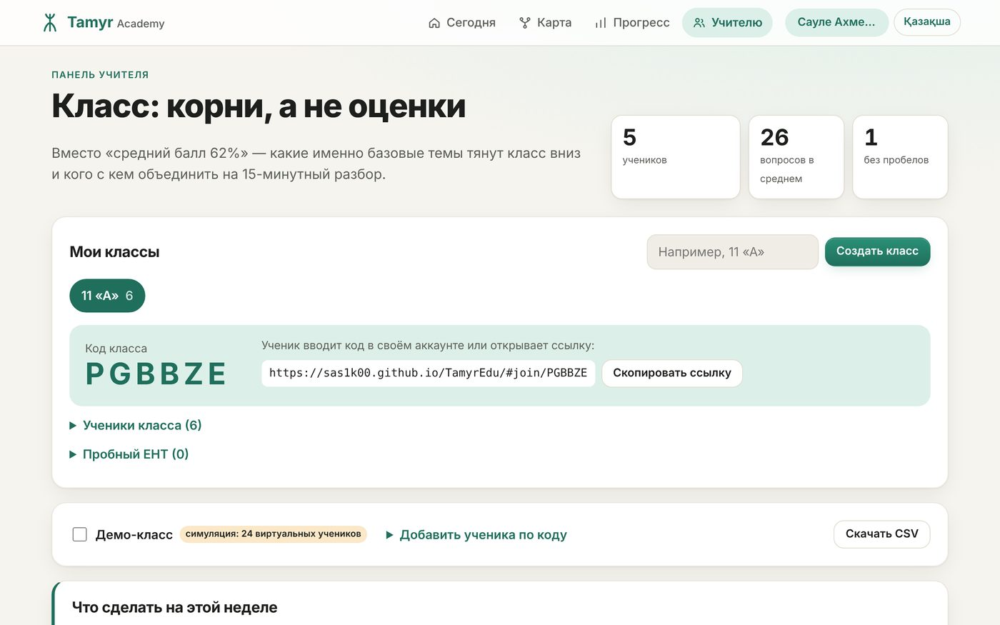
Три числа справа вверху: - учеников — сколько учеников с данными сейчас в панели; - вопросов в среднем — сколько вопросов в среднем ответил каждый; - без пробелов — у скольких учеников не найдено ни одного корневого пробела.
6.2. «Что сделать на этой неделе» — начинайте отсюда
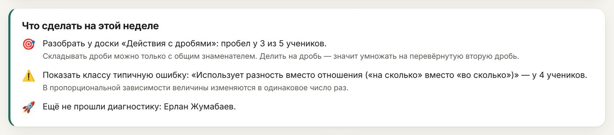
Это готовые действия, которые Tamyr собрал из данных класса:
| Значок | Что значит | Когда появляется |
|---|---|---|
| 🎯 | Разобрать у доски тему, которая чаще всего оказывается корнем. Под ней — правило, которое стоит повторить. | Пробел у 20 % класса и больше (минимум у двух учеников) |
| ⚠️ | Показать классу типичную ошибку мышления и как её исправить | Одна и та же ошибка у двух учеников и больше |
| ⏰ | Напомнить тем, кто давно не занимался | Ученик не занимался 3 дня и больше |
| 🚀 | Кто ещё не прошёл диагностику | Ученик вступил, но не начал |
Пример из снимка. У 3 из 5 учеников корень — «Действия с дробями». Значит, на следующем уроке стоит потратить 10 минут на дроби, даже если по программе сейчас квадратные уравнения. Ерлану Жумабаеву нужно напомнить пройти диагностику.
6.3. Корневые пробелы и ошибки мышления
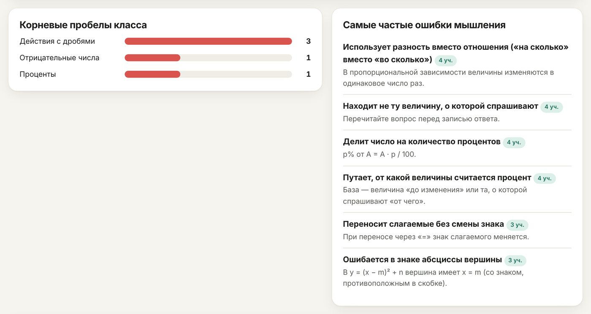
- Корневые пробелы класса (слева). Сколько учеников «застряли» на каждой базовой теме. Длинная полоса — тема для всего класса, короткая — для 1–2 учеников индивидуально.
- Самые частые ошибки мышления (справа). Конкретные неверные приёмы, которые Tamyr распознал по выбранным неверным ответам. Например, «Делит дроби „поперёк“, как при умножении — 3 уч.». Под каждой ошибкой одной строкой написано, как её исправить. Эту строку можно сказать классу дословно.
6.4. Мини-группы для разбора
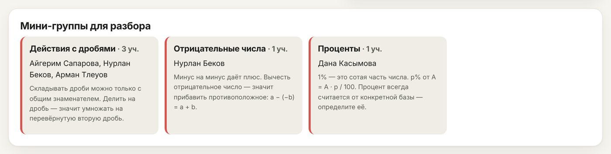
Tamyr сам делит класс на группы по корневому пробелу: кого с кем посадить на 15-минутный разбор и какое правило объяснить.
Пример. Пока класс решает самостоятельную, вы садитесь с группой «Действия с дробями» (Айгерим, Нурлан, Арман) и 15 минут разбираете с ними одно правило. Ученик может оказаться в двух группах, как Нурлан (дроби и отрицательные числа). Тогда начинайте с той темы, что ниже по программе.
6.5. Тепловая карта «ученик × тема»
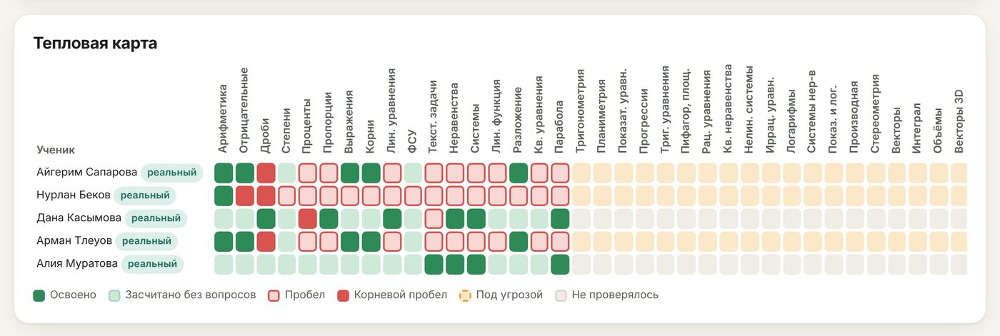
Каждая строка — ученик, каждый столбец — тема (слева базовые темы, справа темы старших классов). Цвета:
| Цвет | Значит | Что делать |
|---|---|---|
| Тёмно-зелёный — Освоено | Ученик решил задачи по теме | Ничего |
| Светло-зелёный — Засчитано без вопросов | Ученик решил более сложную тему, поэтому эта засчитана автоматически | Ничего |
| Розовый с красной рамкой — Пробел | Ошибки по теме | Ждёт, пока закроется корень |
| Ярко-красный — Корневой пробел | Самая низкая тема, на которой ученик ошибается. Причина остальных пробелов | Начинать с неё |
| Жёлтый с пунктиром — Под угрозой | Не проверялась, но держится на пробеле. Скорее всего, тоже «посыплется» | Вернуться после корня |
| Серый — Не проверялось | Данных пока нет | — |
Как читать на примере. У Нурлана Бекова два красных квадрата: «Отрицательные» и «Дроби». Почти вся строка розовая, а справа жёлтая. Значит, нет смысла гонять его по квадратным уравнениям, пока не закрыты отрицательные числа и дроби. У Алии Муратовой вся строка зелёная: ей можно давать задачи посложнее.
Наведите мышь на клетку — появится подсказка с темой и статусом. На телефоне карту можно прокручивать вбок.
6.6. Демо-класс
Переключатель «Демо-класс» (1) показывает или прячет 24 виртуальных ученика. Когда появляется настоящий класс, демо выключается само. Не путайте: у настоящих учеников в тепловой карте стоит пометка «реальный».
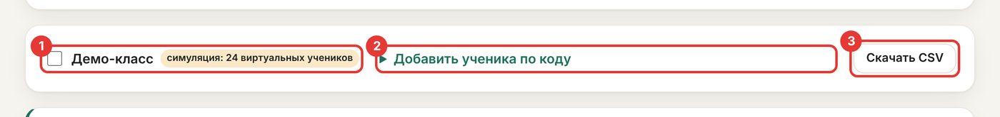
7. Записать результаты пробного ЕНТ
Если класс писал пробный ЕНТ на бумаге или в другой системе, внесите результаты в Tamyr. По ним команда проверяет, правильно ли Tamyr находит пробелы: темы, которые Tamyr назвал пробелом, должны чаще давать ошибки и на ЕНТ. Ученики эти данные не видят.
Шаг 7.1. Откройте раздел
Под кодом класса раскройте «Пробный ЕНТ» и нажмите «Внести пробный ЕНТ» (1).
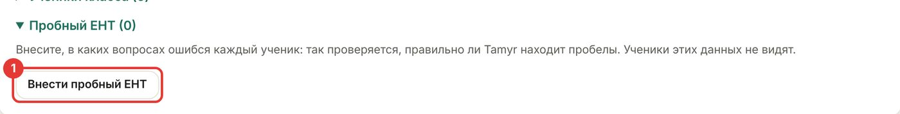
Шаг 7.2. Название, дата и тема каждого вопроса
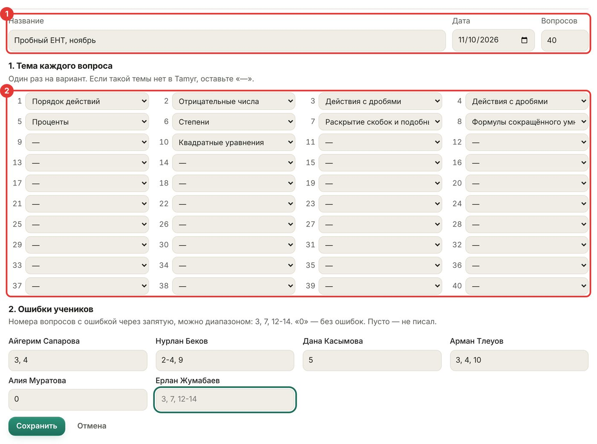
- Название (например, «Пробный ЕНТ, ноябрь»), дата и количество вопросов (по умолчанию 40, можно от 1 до 80).
- Тема каждого вопроса. Для каждого номера выберите тему из списка. Это делается один раз на вариант. Если в Tamyr нет подходящей темы (например, задача с чертежом), оставьте «—».
Пример. В варианте вопрос 3 — «Вычислите 2/3 : 4/5». Выбираем «Действия с дробями». Вопрос 10 — «Решите x² − 5x + 6 = 0». Выбираем «Квадратные уравнения».
Шаг 7.3. Ошибки каждого ученика
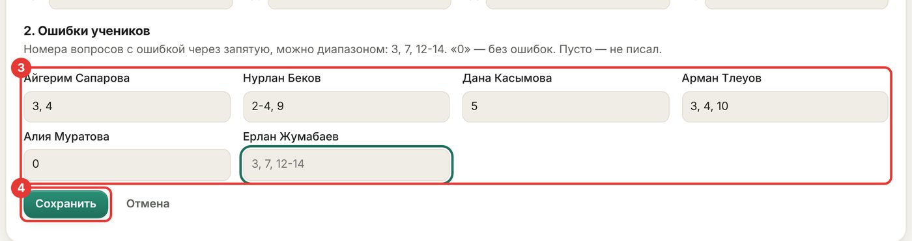
Рядом с именем каждого ученика (3) впишите номера вопросов, где он ошибся:
| Что вписать | Что значит |
|---|---|
3, 4 |
Ошибся в вопросах 3 и 4 |
2-4, 9 |
Ошибся в вопросах 2, 3, 4 и 9 (через дефис — подряд) |
0 |
Написал без ошибок |
| (пусто) | Не писал этот пробный ЕНТ |
Нажмите «Сохранить» (4). Если номер вписан неправильно (например, 45 при 40 вопросах или буквы), Tamyr покажет, у какого ученика проверить номера, и ничего не сохранит.
Шаг 7.4. Готово
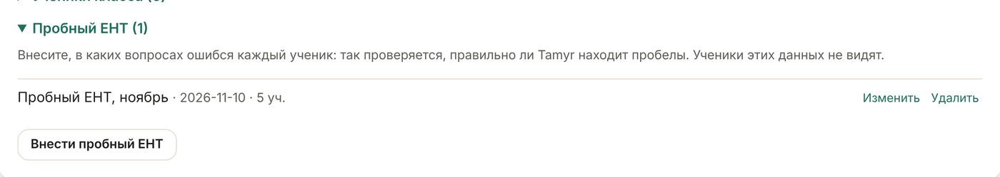
Пробный ЕНТ появился в списке: название, дата и сколько учеников внесено. «Изменить» — исправить ошибку или дописать ученика. «Удалить» — нужно нажать дважды (второй раз — «Точно удалить?»).
В списке есть только ученики, которые уже вступили в класс. Если ученика нет — сначала подключите его (раздел 4), потом нажмите «Изменить».
8. Выгрузить данные в Excel
Кнопка «Скачать CSV» (3) на панели инструментов (см. снимок в разделе 6.6) скачивает файл tamyr-class.csv. Он открывается в Excel двойным кликом, кириллица читается нормально.
В файле: имя ученика, статус по каждой теме, список корневых пробелов и сколько вопросов он ответил. Статусы записаны английскими кодами:
| Код в файле | Значит |
|---|---|
mastered / solid |
Освоено / закреплено |
inferred |
Засчитано без вопросов |
learning |
Изучает сейчас |
gap |
Пробел |
risk |
Под угрозой |
unknown |
Не проверялось |
Если включён демо-класс, его виртуальные ученики тоже попадут в файл. Перед выгрузкой снимите галочку «Демо-класс».
9. Если у ученика нет аккаунта: добавить по коду
Ученик может пользоваться Tamyr без регистрации: прогресс тогда хранится только на его телефоне. Чтобы учитель его увидел, ученик передаёт код.
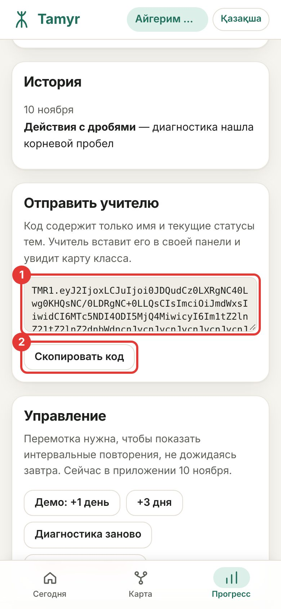
У ученика: вкладка «Прогресс» → блок «Отправить учителю» → «Скопировать код» (2) → отправить код учителю в чат. Код начинается с TMR1. (1).
У учителя: в панели раскройте «Добавить ученика по коду», вставьте код целиком и нажмите «Добавить».
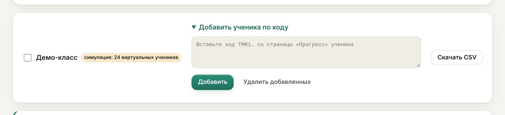
Чем этот способ хуже, чем класс: - код — это снимок на момент копирования. Новые успехи ученика в панели не появятся, пока он не пришлёт новый код; - добавленные ученики хранятся только в этом браузере на вашем компьютере. На другом компьютере их не будет; - «Что сделать на этой неделе» не может напомнить таким ученикам, что они давно не занимались.
Поэтому для постоянной работы лучше класс с кодом (раздел 3–4). Способ с кодом подходит для разовой проверки.
10. Управление классом
Всё делается в блоке «Мои классы» → «Ученики класса» (снимок в разделе 4).
| Задача | Как |
|---|---|
| Убрать ученика из класса | «Убрать» напротив имени → «Точно убрать?» |
| Удалить класс целиком | «Удалить класс» внизу списка → «Точно удалить класс…?» |
| Второй класс | Новое название → «Создать класс». Переключение — вкладками классов |
| Ученик сам вышел из класса | Это его право: он исчезнет из списка. Попросите вступить снова по тому же коду |
| Ученик перешёл в другой класс | Уберите его из старого, он вступит по коду нового |
Удалённого ученика или класс вернуть кнопкой нельзя, но прогресс самого ученика не удаляется: он хранится в его аккаунте. Если ученик снова вступит по коду, его данные снова появятся в панели.
11. Пример: одна неделя с Tamyr
| День | Что делаем | Время |
|---|---|---|
| Понедельник | Создать класс, написать код на доске. Ученики регистрируются, вступают и проходят диагностику | 25 мин урока |
| Понедельник, вечер | Открыть панель → «Что сделать на этой неделе». Записать главный корень класса и мини-группы | 10 мин |
| Вторник | В начале урока разобрать у доски тему 🎯 и ошибку ⚠️. Строку «как исправить» из панели можно сказать классу дословно | 10 мин урока |
| Среда–четверг | Пока класс решает самостоятельную, 15 минут работать с одной мини-группой | 15 мин урока |
| Каждый день, дома | Ученики открывают «Сегодня» и проходят свой план: урок по корню, практика, повторения (около 10 задач, ~15 минут) | дома |
| Пятница | Открыть тепловую карту: стало ли больше зелёного? Кому из ⏰ напомнить? | 5 мин |
| После пробного ЕНТ | Внести результаты (раздел 7) | 15–20 мин на класс |
12. Частые вопросы и проблемы
Нет вкладки «Учителю». Роль учителя ещё не включена (раздел 2.2), или вы не обновили страницу после того, как её включили. Также проверьте, что вы вошли под той же почтой, которую отправили администратору.
Ученик вступил, но его нет в панели / он «ещё нет прогресса». Ученик ещё не прошёл диагностику, или панель не обновилась: нажмите F5. Прогресс уходит в облако через пару секунд после ответа, без интернета — когда связь вернётся.
«Класс с таким кодом не найден». Ученик ошибся в коде. Проверьте, что в коде 6 знаков и что ученик вводит код вашего класса. Проще всего отправить ссылку в чат.
Ученик зарегистрировался под ником («Котик2008»). В панели будет видно это имя. Попросите ученика выйти и создать аккаунт с настоящим именем, либо запомните, кто есть кто.
Ученик прошёл диагностику «слишком хорошо» / результат странный. Возможно, он угадывал или ему подсказывали. Попросите его на «Прогрессе» нажать «Диагностика заново» и пройти её честно, с «Не знаю».
Ученик потерял прогресс. Если он был без аккаунта, прогресс хранился только в браузере и пропал при очистке. С аккаунтом прогресс в облаке: достаточно снова войти.
Можно ли пользоваться с телефона? Да. Ученикам — именно с телефона. Учителю панель тоже открывается на телефоне, но тепловую карту удобнее смотреть на компьютере.
Видят ли ученики оценки друг друга? Нет. Ученик видит только свой прогресс. Данные класса видит только учитель этого класса, и только пока у него есть роль учителя.
13. Честно: чего Tamyr пока не умеет
Лучше знать заранее:
- Это не прогноз балла ЕНТ. «Готовность» — это доля освоенных тем на карте, а не обещанный балл. Задачи базового уровня, без чертежей.
- Темы — алгебра и основы ЕНТ по математике. 36 тем: от порядка действий до интеграла, векторов и стереометрии. Геометрия с чертежами и сложные задачи пока не покрыты.
- Уроки, решения и казахский перевод написаны с помощью ИИ. Учитель их ещё не вычитывал. Если заметите ошибку в задаче или переводе, сообщите команде, это очень поможет.
- Пороги («3 верных подряд без подсказок», когда возвращать тему на повторение) выбраны командой и пока не проверены на реальных учениках. Модель повторений стандартная, она не настроена под наших учеников.
- Результаты пробного ЕНТ пока не превращаются в графики в панели. Они нужны, чтобы проверить точность Tamyr. Ваши внесённые данные — главный способ сделать его точнее.
- Tamyr не заменяет учителя. Он показывает, где корень и кого с кем объединить. Объяснить так, чтобы поняли, можете только вы.
14. Шпаргалка на одну страницу
УЧИТЕЛЬ — один раз
1. sas1k00.github.io/TamyrEdu → «Войти» → «Нет аккаунта? Создать»
2. Отправить почту администратору → получить роль → обновить страницу
3. «Учителю» → «Мои классы» → название → «Создать класс»
4. Код — на доску, ссылку — в чат класса
УЧЕНИК — один раз (2 минуты)
1. Открыть ссылку → «Нет аккаунта? Создать» (настоящее имя!)
2. «Мой класс» → код → «Вступить»
3. «Найти мой корень» / «Начать» → диагностика (не угадывать, жать «Не знаю»)
УЧИТЕЛЬ — каждую неделю
• «Что сделать на этой неделе»: 🎯 разобрать у доски, ⚠️ показать ошибку,
⏰ напомнить, 🚀 кто не начал
• «Мини-группы»: с кем сесть на 15 минут
• Тепловая карта: красный = корень → начинать с него
ПОСЛЕ ПРОБНОГО ЕНТ
«Пробный ЕНТ» → «Внести» → темы вопросов (один раз на вариант)
→ ошибки учеников: «3, 7, 12-14», «0» = без ошибок, пусто = не писал → «Сохранить»